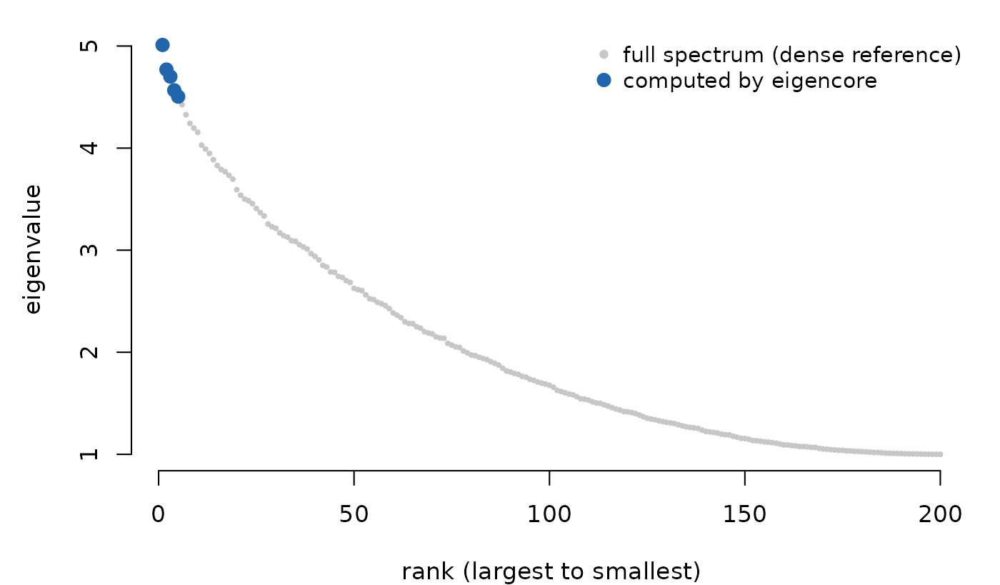
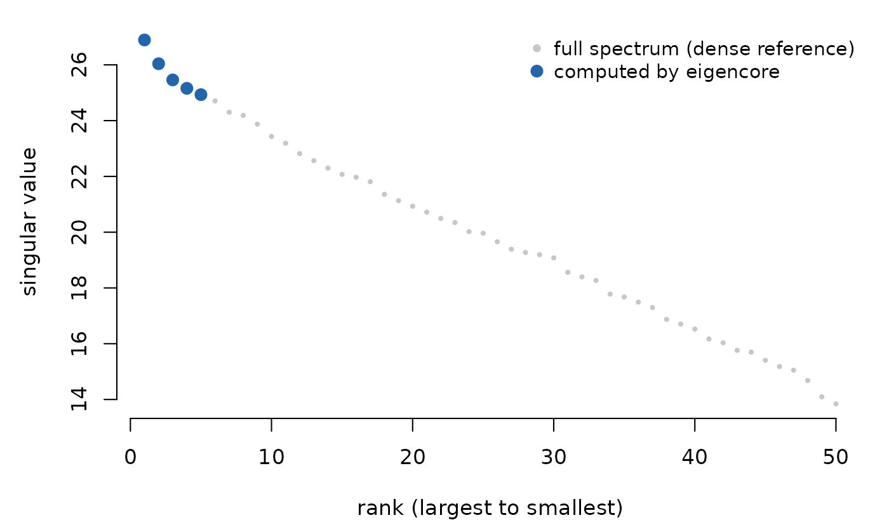

A matrix too large to fully diagonalize still has a handful of eigenvalues or singular values you actually need — the top few directions of variance, the leading modes of a graph, the dominant singular triplets behind a low-rank approximation. eigencore computes exactly that partial answer, and every result carries a certificate: residuals, a backward-error bound, and a pass/fail verdict for the checks named by the certificate type.
Compute a certified partial eigendecomposition
Build a symmetric matrix and ask for its five largest eigenvalues:
set.seed(1)
n <- 200
A <- crossprod(matrix(rnorm(n * n), n, n)) / n + diag(n)
fit <- eig_partial(A, k = 5, target = largest())
fit
#> Partial eigen decomposition
#> requested: 5
#> converged: 5
#> method: native scalar thick-restart Hermitian Lanczos
#> target: largest
#> restart:thick_restart(in_native_loop)
#> locked: 5
#> max residual: 1.67046e-07
#> max backward error: 4.546939e-09
#> max orthogonality loss: 2.109424e-15
#> norm bound: frobenius_exact+identity_exact
#> scale estimated: FALSE
#> certificate: passedfit$certificate$passed reports whether these five
returned pairs meet the certificate’s residual, backward-error, and
orthogonality requirements. It does not by itself prove that they are
the five largest eigenpairs; the solver target and plan describe that
selection.
fit$certificate$passed
#> [1] TRUE
The five largest eigenvalues (blue) located within the full spectrum of A (grey). eigencore computes only the requested slice, then certifies it.
With n = 200 this computed 5 of 200 pairs. In a
production problem with n = 1e6, computing the full
spectrum is impossible — the partial result is the only result,
which is exactly why a certificate matters.
Generalized SPD eigenproblem (A v = lambda B v)
Pass a metric B to eig_partial() when the
problem is A v = lambda B v rather than the standard
A v = lambda v.
B <- diag(seq(1, 5, length.out = n))
fit_gen <- eig_partial(A, k = 5, target = largest(), B = B,
method = lobpcg(maxit = 200))
fit_gen
#> Partial eigen decomposition
#> requested: 5
#> converged: 5
#> method: native generalized SPD LOBPCG (B-orthogonal, residual certified)
#> target: largest
#> restart: lobpcg
#> locked: 5
#> max residual: 2.71427e-08
#> max backward error: 1.961324e-10
#> max orthogonality loss: 1.554312e-15
#> norm bound: frobenius_exact+frobenius_exact
#> scale estimated: FALSE
#> certificate: passedThe certificate’s residual is
||A v - lambda B v|| / (||A|| + |lambda| ||B||), and
orthogonality is measured in the B-inner product where
appropriate. See vignette("generalized-eigenproblems") for
dense pencils, singular B, and the QZ decomposition.
Partial SVD
For rectangular problems use svd_partial():
M <- matrix(rnorm(400 * 50), 400, 50)
svd_fit <- svd_partial(M, rank = 5, target = largest())
svd_fit
#> Partial SVD
#> requested rank: 5
#> converged rank: 5
#> method: native certified Gram SVD special case
#> target: largest
#> max residual: 1.150887e-15
#> max backward error: 8.059933e-18
#> max orthogonality loss: 4.440892e-16
#> norm bound: frobenius_exact
#> scale estimated: FALSE
#> certificate: passedThe same mental model applies to singular values: you compute the leading few and leave the tail untouched.

The five leading singular values (blue) computed by eigencore, shown against the full singular-value spectrum of M (grey).
The reported method identifies the path — for very small
or near-square problems eigencore may use a dense LAPACK SVD fallback
rather than running its iterative Golub-Kahan kernel. Either way the
certificate covers both ||A v - sigma u|| and
||A^T u - sigma v||.
RSpectra-compatible workflow
If your existing code uses RSpectra::eigs_sym(), you can
call eigencore in the same shape — the return list extends RSpectra’s by
adding certificate and diagnostics:
res <- eigs_sym(A, k = 5, which = "LA")
str(res, max.level = 1)
#> List of 7
#> $ values : num [1:5] 5.01 4.77 4.7 4.57 4.5
#> $ vectors : num [1:200, 1:5] 0.0227 0.0103 0.0923 -0.1479 -0.0414 ...
#> $ nconv : int 5
#> $ niter : int 60
#> $ nops : int 62
#> $ certificate:List of 18
#> ..- attr(*, "class")= chr "eigencore_certificate"
#> $ diagnostics:List of 21
res$certificate
#> eigencore certificate
#> passed: TRUE
#> tolerance: 1e-08
#> type: residual_backward_error
#> norm bound: frobenius_exact+identity_exact
#> scale estimated: FALSE
#> max residual: 2.074432e-09
#> max backward error: 5.646538e-11
#> max orthogonality loss: 2.220446e-15
#> orthogonality tolerance: 1.490116e-08
#> orthogonality required: TRUEeigs(), eigs_sym(), and svds()
accept the same which codes as RSpectra —
"LM", "SM", "LA",
"SA", "LR", "SR",
"LI", "SI", and "BE".
Under the hood: operators, problems, and plans
eig_partial() and svd_partial() cover the
common case, but every call you’ve made in this vignette runs through
the same four-stage architecture, and you can drop down to it directly
when you want to inspect or reuse a piece of that pipeline.
1. Operators. Any matrix is wrapped in a block-native operator the moment you hand it to a problem constructor. You can do this explicitly:
Aop <- as_operator(A)
Aop
#> <eigencore operator>
#> name: dense_matrix
#> dim: 200 x 200
#> dtype: double
#> structure: hermitianThe operator carries dimensions, structure tags, and a flag
indicating whether the underlying storage has a native kernel (in this
case dense double — yes). vignette("sparse-pca") builds
operators that center and scale a sparse matrix without densifying it —
the same object type, doing more work per call.
2. Problems. eigen_problem() and
svd_problem() describe what to solve: the matrix,
its structure (hermitian(), general(), …), and
the spectral target (largest(), smallest(),
nearest(), …).
P <- eigen_problem(A, structure = hermitian(), target = largest())3. Plans. plan_solver() chooses a
method and returns an executable, frozen record. It stores the problem,
requested size, method descriptor, execution controls, operator
identity, and the planner-policy snapshot that selected the route.
Changing options(eigencore.*) later does not alter
solve(plan).
plan <- plan_solver(P, k = 5)
plan
#> eigencore solver plan
#> problem: eigen
#> requested: 5
#> target: largest
#> method: native scalar thick-restart Hermitian Lanczos
#> reasons:
#> - structure: hermitian
#> - target: largest
#> - standard eigenproblem
#> - built-in dense operator has native block apply
#> controls:
#> - block : 1
#> - max_subspace : 35
#> - max_restarts : 100
#> - check_stride : 0
#> - reorthogonalize : TRUE
#> fallback: dense oracle prototype if unsupported4. Solve. Solve the plan when you want the inspected route and controls to govern execution. The result distinguishes that planned route from the route that actually returned the certified values; they differ only when an allowed runtime fallback is used.
planned_fit <- solve(plan)
c(
planned = planned_fit$planned_method,
actual = planned_fit$actual_method,
fallback = planned_fit$fallback_used
)
#> planned
#> "native scalar thick-restart Hermitian Lanczos"
#> actual
#> "native scalar thick-restart Hermitian Lanczos"
#> fallback
#> "FALSE"
isTRUE(all.equal(planned_fit$values, fit$values))
#> [1] TRUEA problem is reusable but not frozen: solve(P, k = 5)
creates a fresh plan under current package options on every call, which
is also what eig_partial() does internally. Use
solve(plan, replan = TRUE) only when you deliberately want
a fresh decision from the embedded problem; the old plan is not
modified.
Where to go next
-
vignette("psd-geometry")— certify a singular PSD form, work explicitly on its image space, and choose dense or structural sparse capabilities. -
vignette("sparse-pca")— the flagship workflow: centering and scaling a sparse matrix without densifying it, and building matrix-free operators by hand. -
vignette("certificates")is the deep dive on reading the numerical evidence — what each field means and what to do when a check fails. -
vignette("generalized-eigenproblems")covers dense pencils, singularB, and the QZ decomposition. - Run
help(package = "eigencore")to browse the installed help index. -
?certificatedocuments the certificate fields in detail. -
?plan_solverexplains how operator structure, target, and method combine to choose a kernel.